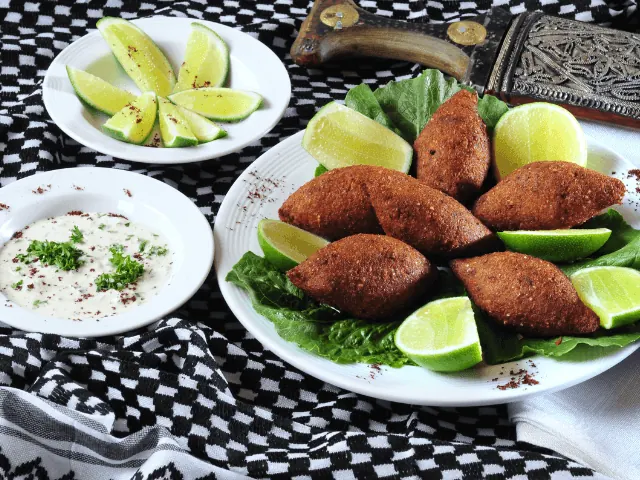
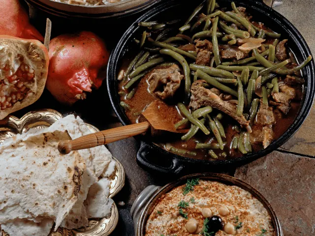
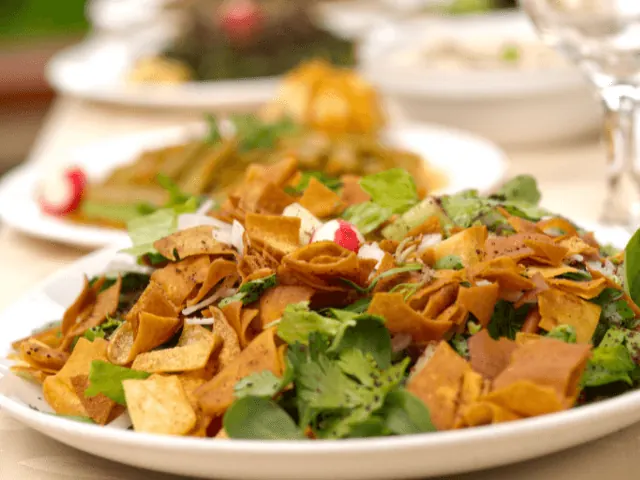

Op zoek naar een Nieuwe Belevenis? Probeer Libanees Eten
Gepubliceerd op 9 februari 2023, bijgewerkt op 20 oktober 2023
Onderdeel van de gids Restaurants in Nijmegen

Eén van de meest verfijnde keukens ter wereld is de Libanese keuken. Deze kenmerkt zich met diverse invloeden uit de Mediterraanse en Midden-Oosterse keuken. Het is bovendien een keuken waar veel vegetarische gerechten in bestaan. Libanees eten is enorm divers en voor een groot publiek toegankelijk. Heb jij het al eens uitgeprobeerd? Nog niet? Dan is dit hét moment! Benieuwd welke restaurants in Nijmegen de lekkerste Libanese gerechten aanbieden? Wij zochten het voor je uit.
In het centrum van Nijmegen vind je restaurants Lila en Eazie. Beide eetgelegenheden bieden heerlijke Libanese gerechten aan. Op zoek naar een unieke sfeerbeleving? Dan is restaurant Lila absoluut de beste keuze voor jou. In Rhenen, op slechts een half uurtje rijden van Nijmegen, vind je het familierestaurant Al Orzaal. Ook deze plek moet je geprobeerd hebben wanneer je de Libanese keuken wenst te ontdekken.
Nieuwsgierig welk Libanees restaurant het beste aansluit op jouw persoonlijke wensen? Dan raden wij je aan het onderstaande artikel grondig door te lezen. We nemen namelijk diverse Libanese restaurants in Nijmegen onder de loep. We bekijken de menukaart, en ook de sfeer in het restaurant is natuurlijk van belang. Op deze manier hopen we jou te helpen een weloverwogen keuze te maken wanneer je een Libanees restaurant in Nijmegen zoekt.
Overzicht Libanese restaurants in Nijmegen
Libanese restaurants in Nijmegen – Bezoek deze pareltjes
Een veganistisch broodje falafel of heerlijke Libanese gehaktballetjes, de Libanese keuken heeft ons enorm veel te bieden. In verschillende restaurants in Nijmegen en omstreken kun je deze heerlijke authentieke gerechten uitproberen. Wij hebben speciaal voor jou onze favoriete Libanese restaurants op een rijtje gezet. Benieuwd waarom gasten zo enthousiast worden van de onderstaande Libanese tentjes? Lees dan gauw verder!
· Restaurant Lila Nijmegen
In het centrum van Nijmegen, vlak aan de prachtige rivier de Waal, vind je het gezellige restaurant Lila. Het betreft een uitermate sfeervolle tent waar je optimaal kunt genieten van al het lekkers dat de Libanese keuken te bieden heeft.
Het restaurant is versierd met unieke LED-verlichting in diverse sfeervolle kleuren. Dit maakt de sfeerbeleving absoluut compleet. Maar ook het Libanese eten in dit restaurant is van topkwaliteit. Het menu is enorm veelzijdig met daarop diverse koude én warme gerechten.
Zowel voor de vegetariërs als voor de vleeseters is er in restaurant Lila enorm veel om van te genieten. Van een koude maza tot een uitgebreid warm vleesgerecht, jouw ervaring met de Libanese keuken wordt er één om nooit meer te vergeten.
Je kunt bij restaurant Lila gezellig komen eten, echter is het ook mogelijk om maaltijden af te halen. Kortom, het is dé plek in Nijmegen om Libanees te eten op het hoogste niveau.

· Restaurant Al Orzaal in Rhenen
In Rhenen, op ongeveer een half uurtje rijden van Nijmegen, vind je restaurant Al Orzaal. Het is een familiebedrijf met een grote passie voor Libanees eten. De sfeer in het restaurant weerspiegeld dit duidelijk.
Het menu van restaurant Al Orzaal is absoluut indrukwekkend. Er wordt in de keuken uitsluitend met de allerbeste Libanese producten gewerkt. Op deze manier komen alleen de beste culinaire hoogstandjes op het menu terecht. De reviews liegen er niet om. Gasten hebben hier duidelijk de tijd van hun leven.
Onderstaand een greep uit de positieve reviews:
- Fantastisch lekker Libanees eten
- Supervriendelijke eigenaars en personeel
- Altijd een gezellige sfeer
- Ook heerlijke Libanese wijn
Restaurant Al Orzaal is zonder twijfel één van de betere Libanese restaurants in de omgeving van Nijmegen. Wij raden iedereen sterk aan om dit restaurant zelf uit te proberen. Daar zul je geen spijt van krijgen, dat beloven wij!

· Restaurant Eazie in Nijmegen
In het centrum van Nijmegen is restaurant Eazie te vinden. Het is een restaurant met meerdere ketens in ons land. Eazie staat bekend om zijn gezonde en zeer gevarieerde maaltijden. Het beste uit de Mediterraanse en Midden-Oosterse keuken ontmoeten elkaar in dit gezellige restaurant.
De gerechten van Eazie zijn voedzaam, ontzettend lekker en bovendien een lust voor het oog. Een oog voor detail is namelijk waarmee Eazie zich onderscheidt van de concurrentie. Ook het enorm uitgebreide menu is natuurlijk een groot pluspunt. Er is werkelijk waar voor ieder wat wils te vinden bij restaurant Eazie.
Zowel kinderen als volwassenen kunnen hun geluk niet op tijdens een bezoekje aan restaurant Eazie. Je kunt in dit veelzijdige restaurant ook je volledige eigen wok gerecht samenstellen. Je eet dus precies waar jij zin in hebt.
Gezond bezig zijn maar toch lekker eten? Bij restaurant Eazie in Nijmegen ben je aan het juiste adres.

RESTAURANT INSPIRATIE NODIG?
restaurants in nijmegenRestaurants in Nijmegen
Zin om te beginnen? In onze bedrijvengids vind je alle 303 restaurants in Nijmegen, met openingstijden, kenmerken en een kaart.
Bekijk alle 303 restaurants in Nijmegen
Heb je zelf een restaurant? Laat je hier uitlichten.